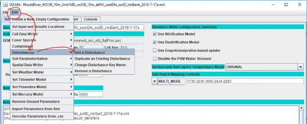
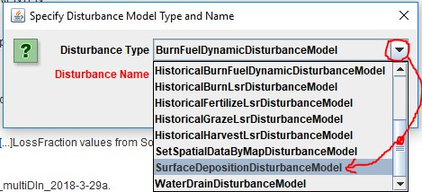
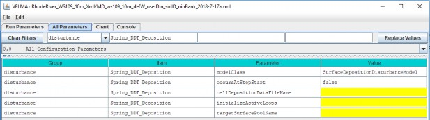

Deposition of Surface Chemicals
Overview (Surface Chemical Deposition)
This document describes how to use VELMA's disturbance routine to control the timing, amount and location of a chemical to deposit to the surface pool (the surface pool is located above soil layers 1-4).
This tutorial builds upon two other VELMA surface layer tutorials. We recommend consulting these before applying this tutorial:
Mapping Surface Layer PermeabilitiesVELMA Surface Chemistry PoolsA Surface Deposition Disturbance increases the amount of chemical in the surface pool of a specific chemical type (e.g. NH4, or a configuration-specific contaminant) at specific times and locations during a VELMA simulation run.
A single Surface Deposition Disturbance targets a single chemical type. If you need to perform surface deposition for more than one chemical (e.g. for NH4 and NO3) you much configure multiple, separate, Surface Deposition Disturbances.
The Surface Deposition Disturbance uses a diver schedule, encoded in a .csv file to specify WHEN (i.e., which simulation steps) and WHERE (i.e., which cells) additional amounts are deposited.
(However, you specify the loops it occurs in via the activeLoops parameter.)
Overview: Configuration Steps for a Surface Deposition Disturbance
Adding one or more Surface Deposition Disturbances to a VELMA simulation configuration via JVelma involves the following two steps:
- Create the deposition data .csv driver file for the surface deposition.
- Add a new Surface Deposition disturbance parameterization group to the simulation configuration.
Creating a Surface Deposition Disturbance Driver Data File
Almost all the configuration information a Surface Deposition Disturbance requires is contained within a driver data file. The file consists of one or more rows of comma-separated values. Each row must contain at least four values ("fields") which denote (in order):
iCell, yearRange, jdayRange, depositAmount.
Where:
iCell = the integer linear index of the cell location within the simulation watershed that will receive deposition amounts.
yearRange = the integer year (e.g. 1981) or range of years (e.g. 1981-1991) in which iCell will receive the specified depositAmount.
jdayRange = the integer Julian day of the year (e.g. 30) or range of jdays (e.g. 30-72) in which iCell will receive the specified depositAmount.
depositAmount = the decimal amount of chemical (in g/m2) to deposit in iCell on the specified
yearRange, jdayRange (e.g. 0.5).
The yearRange, jdayRange, and depositAmount fields triplet may be repeated within a row, but it is an error to specify a given year, jday pair more than once in a single row (i.e. for a single iCell).
The file can contain a header row of comma-separated column header texts as its first row, but this is not necessary, and the header row is ignored if it exists. When a header row is present, it must not have a digit as the first character of the leftmost column header's text.
Here is are the rows for a small example deposition driver .csv file:
iCell, yearRange, jDayRange, depositAmount 5216, 1980, 30-60, 1.55330, 1985-1990, 1, 0.25, 1992, 90-107, 0.3
The above example sets deposition times and amounts for two locations (cells 5216 and 5330) of the surface pool specified to the deposition disturbance. Notice that the deposition driver schedule in row 3 (for cell 5330) contains two (yearRange, jdayRange, depositAmount) "triplets" - and either row could contain as many more as necessary, so long as the year and Julian day values of any two triplets on the same row do not overlap/collide.
Cell 5216 will receive 1.5 g/m2 to its surface pool during Julian days 30 through 60 of year 1980.
Cell 5330 will receive 0.25 g/m2 to its surface pool on the first day of years 1985 through 1990, and 0.3 g/m2 during Julian days 90 through 107 of year 1992.
Note: whitespace is ignored by the disturbance's file reader, the above spacing is for example readability.
Implicit in the creation of a deposition driver file is the assumption that the iCell values prefixing each row of the file are valid linear indices within the delineated watershed of the VELMA simulation configuration that the Surface Deposition Disturbance and driver data will be added to.
It may be helpful to open VELMA the simulation configuration's flat-processed DEM .asc file in JPDEM, delineate it at the configuration-specified outlet
Adding a Surface Deposition Disturbance Parameterization to a VELMA Configuration
Start with an appropriate VELMA simulation configuration .xml file and deposition driver data .csv file (i.e., the driver data .csv file's cell indices are appropriate for the configuration .xml file's DEM and delineation). Load the VELMA simulation configuration .xml file into JVelma, then click the
Edit -> Disturbances -> "Add a Disturbance" menu item, as shown below:

In the "Specify Disturbance model Type and Name" pop-up dialog that opens next, click the drop-down selector, scroll down, and click-select the SurfaceDepositionDisturbanceModel type:

Next, type in a unique name for the disturbance in the "Disturbance Name" field of the dialog.
Finally click the OK button, which adds a new parameterization group to the simulation configuration, and changes JVelma's display to the "All Parameters" tab, with the Item-level filter set to only display the parameters for the newly-added contaminant.

Parameters That Must Be Left Alone
The modelClass parameter is set by JVelma when you add the Surface Deposition Disturbance to the simulation configuration. Do Not Change this parameter's value. Ever.
Parameters You Can / Must Provide Values For
The occursAtStepStart parameter is default-set to "false", and indicates that the disturbance is run at the end of each simulation step. This means that the water balance, chemistry and chemical transport for that step has already taken place. Deposition amounts will be part of the next step's calculations.
The only other value for occursAtStepStart is "true" (without the quote marks) and indicates that the disturbance is run at the start of each simulation step, and be part of that step's chemistry and chemical transport calculations. Neither value is "more correct" but setting occursAtStepStart to "true" may make analyzing results a bit simpler. (The default value of "false" is a legacy of earlier VELMA default behavior).
Set the initializeActiveLoops to the integer value or integer range of values when the disturbance should be active. For example, if your simulation was configured to run from year 2000 through 2015, and 5 loops, but you only want the Surface Deposition Disturbance to occur for the last 2 loops, set the value to "4, 5" or "4-5" (without the quote marks).
Set the cellDepositionDataFileName to the name of the deposition driver data .csv file you prepared for this Surface Deposition Disturbance. You can provide a fully-qualified path and name, a partial-path and name, or just a file name. When the name isn't fully-qualified, JVelma assumes the file's location is relative to the input location specified for the simulation run by the inputDataLocationRootName and inputDataLocationFileName (startups group) parameters.
The targetSurfacePoolName parameter specifies the surface pool that the disturbance will add chemical amounts to. You can deposit amounts to any of the VELMA core chemistry pools, or any contaminants parameterized for the simulation configuration.
The values for the core chemistry pools are SURFACE_NH4, SURFACE_NO3, SURFACE_DON and
SURFACE_DOC.
To specify a contaminant surface pool, set the value of this parameter to CONTAMINANT_SURFACE_ +
the value of the contaminant's uniqueName parameter. Example, for a contaminant with uniqueName
| = DDT, the targetSurfacePoolName would be CONTAMINANT_SURFACE_DDT.
Capturing Output for a Surface Deposition Disturbance
No additional results are automatically recorded when a Surface Deposition Disturbance occurs.
To record the results, set up a Spatial Data Writer parameterization for the same SURFACE_ pool that the disturbance deposits chemical amounts to, triggering it to write maps on the days you are interested in results for. You can also set Cell Data Writers for cell locations of specific interest.